前面四课的陈述句都在「给信息」，这一课的陈述句大多已经在给理由 —— 有 that's why、有 because、有 due to。所以造问句时不是「挖掉一块」，而是反过来找那个理由本来要回答的问题。第 14、15 题最极端：它们本身就是答案（I guess I just didn't study hard enough），你得先推断出「他被问了什么」。
课本 p.106–109
15 个陈述句 + 1 个例题
从理由反推问题
01先把造问句的骨架搭好
Why 问句的造法和前面几课不同：不是把某个成分挖空，而是把「结果」挖空，留下理由。
先分清哪部分是理由、哪部分是结果"I love the scenery… That's why I live here." → 理由：风景好；结果：住这儿。
把结果换成问句 — 问的是结果Why do you live here?（不是 why you love the scenery）
配助动词 — 跟结果那一句的动词一致I live → do you live；I made a fortune → did you make。
三个信号词，一看到就知道问什么。 That's why I… → 前面的都是理由，问「你为什么做那件事」。
… so I… → so 后面是结果，问那个结果。
… because / due to … → 前面是结果，问那个结果。
这三种结构占了这一课一大半。
第 8 题的图里就有一个 Why don't you 类型的问句。
图上的文字是 Do you want to go see the doctor? —— 但要注意，
Why don't you go see the doctor? 在英语里不是在问「为什么不」，而是在建议「你该去看医生」。
中文的「你为什么不……？」经常带质问，英语的 Why don't you…? 却几乎总是善意的提议。
同一句话，两种语言的语气完全相反，这是这一课最值钱的一个观察。
Why don't you have breakfast? / Why do you sleep late?
… is due to poor discipline.
6
Why is the crime rate increasing?
… because he was the handsomest man…
15
Why did you marry him?（原问题被完全藏起来了）
第 15 题是本课的「终极题」。
陈述句只有一句 Because he was the handsomest man I ever met! —— 它就是一个答案，而且是从句。
你要推断出原问题是「你为什么嫁给他 / 为什么选他」。这类题考的不是语法，是你能不能听出对话的上下文。
C · 十个常用的 Why 问句
这些是真实对话里出现频率最高的，可以直接当模板用。
Why not?
为什么不行。最短的一句，用途极广
Why bother?
何必呢。带一点放弃的意味
Why me?
为什么是我。抱怨或惊讶
Why on earth…?
到底为什么。加强语气，带不解
Why would you…?
你为什么要……。常含质疑
How come…?
怎么会。口语版的 why，陈述语序
What makes you say that?
你为什么这么说。追问理由的高级说法
What's the reason for…?
……的原因是什么。正式
Is there a reason…?
有什么原因吗。委婉追问
Why is that?
为什么。最简短的追问
03课本例题：一句话，两个问句
例题的陈述句是 English is necessary for my job.，只有六个词。课本给了两个问句，一个问「你为什么学英语」，一个问「英语为什么重要」—— 同样的信息，两个不同的角度。
Example
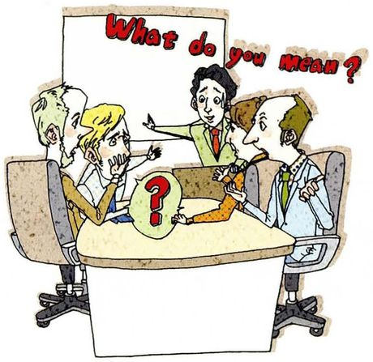
English is necessary for my job. /ˈnesəseri/
The statementEnglish is necessary for my job.
What to ask about有 is → 直接用 why is，不需要助动词。可问「你为什么学」，也可问「它为什么重要」。
Questions you can ask①Why are you learning English? ②Why is English important? ③What do you need it for?
第 ③ 个问句是最地道的。What do you need it for? —— 问「你要它做什么」，比 why do you need it 更自然，而且避免了一连串的 why。
英语里连续问三个 why 会显得像在审讯，换一个问法（What for? / What's the reason? / How come?）语气立刻缓和。
「necessary」这个词别用错。English is necessary for my job 是对的；但 I am necessary to learn English 是错的 —— necessary 形容事物，不形容人的义务。
要说「我必须学英语」，用 I have to learn English 或 English is necessary for me。
04十五个陈述句：怎么问出好问题
每张卡三段：The statement 课本原句，What to ask about 说清理由和结果分别是哪部分、助动词怎么选，Questions you can ask 给三个问句。
01
I love the beautiful scenery in the country. Clean air makes me feel refreshed. That's why I live here.
The statementI love the beautiful scenery in the country. Clean air makes me feel refreshed. That's why I live here.
What to ask about课本脚注：refreshed = 休息后感到清爽有活力。That's why 前面全是理由，问句问「结果」—— 你为什么住这儿。
Questions you can ask①Why do you live in the country? ②Why do you live here instead of the city? ③What do you like most about living there?
02
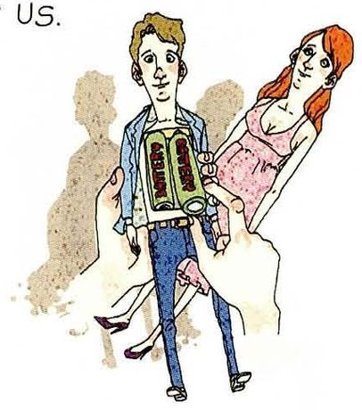
My wife and I usually sleep late in the morning, so we have no time for breakfast. But we don't care if we skip it, two meals are enough for us.
The statementMy wife and I usually sleep late in the morning, so we have no time for breakfast. But we don't care if we skip it, two meals are enough for us.
What to ask about课本脚注：skip = 不做或不吃。so 后面是结果，问那个结果，或问原因（为什么睡那么晚）。
Questions you can ask①Why don't you have breakfast? ②Why do you sleep so late? ③Why are two meals enough for you?
03
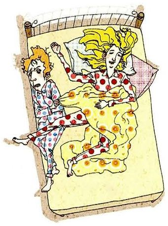
I don't think marriage is a must for everybody. I feel very comfortable living alone.
The statementI don't think marriage is a must for everybody. I feel very comfortable living alone.
What to ask about课本脚注：must（名词）= 必需的东西。第二句是第一句的理由，问观点或问理由都行。
Questions you can ask①Why don't you want to get married? ②Why do you think marriage isn't for everybody? ③What do you like about living alone?
04
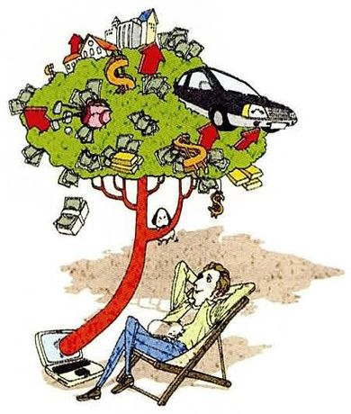
I made a fortune in stocks, so I can afford to enjoy my life without having to work. Early retirement has always been my dream.
The statementI made a fortune in stocks, so I can afford to enjoy my life without having to work. Early retirement has always been my dream.
What to ask about课本脚注：fortune = 巨额财富；stocks = 股票。made 过去时 → did。三个可问点：怎么赚的、为什么想早退、赚了多少。
Questions you can ask①Why do you want to retire early? ②How did you make a fortune? ③What will you do after you retire?
05
The stock market is too dangerous for me. So I save all my money in the bank.
The statementThe stock market is too dangerous for me. So I save all my money in the bank.
What to ask aboutso 后面是结果（存银行），前面是理由（股市太险）。问「为什么」可以落在任何一边。
Questions you can ask①Why do you keep your money in the bank? ②Why do you think the stock market is dangerous? ③Why don't you invest a little?
06
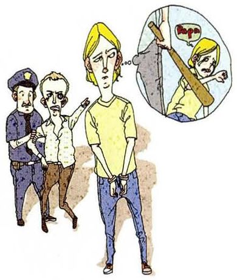
I think the increasing crime rate is due to poor discipline at home.
The statementI think the increasing crime rate is due to poor discipline at home.
What to ask about课本脚注：due to = 由于；discipline = 管教、训练。这是「结果 + due to + 理由」，问那个结果。
Questions you can ask①Why is the crime rate increasing? ②Why do you think home discipline matters? ③What else might be causing it?
07
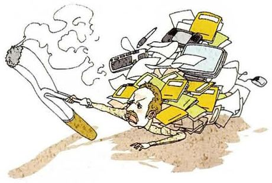
I stopped smoking for six months. But my current workload is keeping me so stressed out that I started smoking again.
The statementI stopped smoking for six months. But my current workload is keeping me so stressed out that I started smoking again.
What to ask about课本脚注：workload = 工作量。理由已经很清楚了（压力大），问「为什么戒烟失败」或「为什么压力这么大」。
Questions you can ask①Why did you start smoking again? ②Why is your workload so heavy? ③Why did you stop in the first place?
08
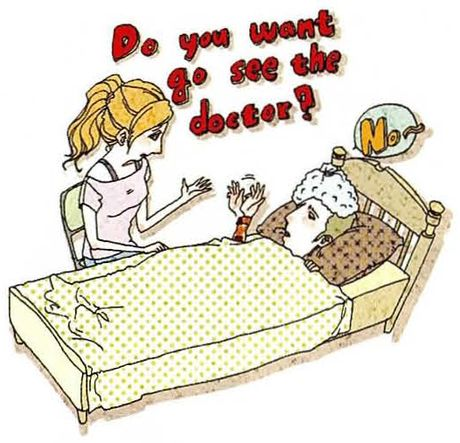
Oh, no, I just want to relax at home. There is no cure for a cold, anyway.
The statementOh, no, I just want to relax at home. There is no cure for a cold, anyway.
What to ask about这句是在回答「要不要去看医生」。图上的问句是 Do you want to go see the doctor?。造问句时可以问「为什么不去」，注意语气。
Questions you can ask①Why don't you go and see the doctor? ②Why do you want to stay home? ③Why do you think there's no cure?
09
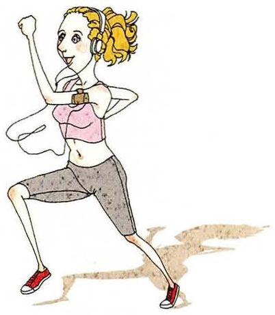
Running is the best exercise! It is cheap and we can do it anywhere.
The statementRunning is the best exercise! It is cheap and we can do it anywhere.
What to ask about第二句是理由（便宜、随时可做）→ 问「你为什么这么认为」。这类「观点 + 理由」的句子，问的是观点。
Questions you can ask①Why do you think running is the best exercise? ②Why running rather than swimming? ③Why do you like it?
10
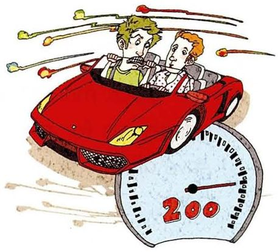
We are late! Don't worry, even at this speed you are perfectly safe in my car.
The statementWe are late! Don't worry, even at this speed you are perfectly safe in my car.
What to ask about这题最好玩的问法是质疑对方的前提：为什么你觉得安全？do you think 后面接陈述语序。
Questions you can ask①Why are we late? ②Why do you think this is safe? ③Why are you driving so fast?
11
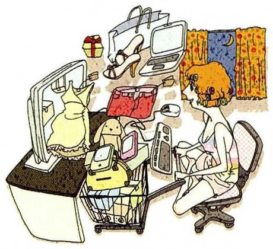
I can shop around the clock while never leaving home, and I don't have to worry about being ripped off.
The statementI can shop around the clock while never leaving home, and I don't have to worry about being ripped off.
What to ask about课本脚注：around the clock = 全天候；ripped off = 被宰。这是「网购的好处」，问「为什么网购」。
Questions you can ask①Why do you shop online? ②Why don't you go to the shops? ③Why do you think it's safer?
12
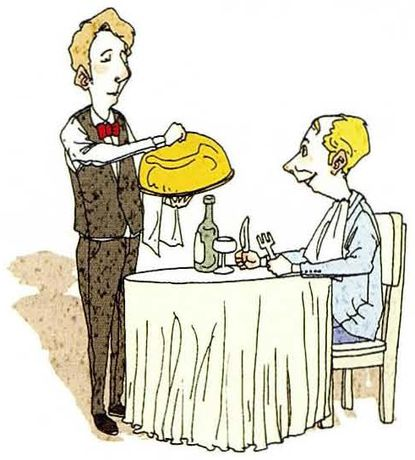
I'm not a good cook, and, besides, I enjoy the variety of foods local restaurants provide.
The statementI'm not a good cook, and, besides, I enjoy the variety of foods local restaurants provide.
What to ask aboutbesides = 而且。两个理由并列（不会做饭、喜欢多样），问「为什么在外面吃」。
Questions you can ask①Why do you eat out so often? ②Why don't you cook at home? ③What kind of food do you like?
13
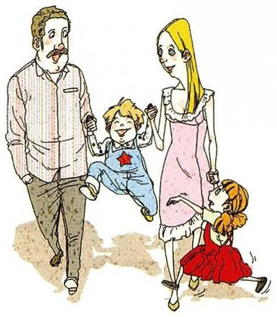
They paid so much attention to the oldest son that they neglected their daughter.
The statementThey paid so much attention to the oldest son that they neglected their daughter.
What to ask about课本脚注：neglect = 忽视、不管。paid 过去时 → did。「so … that …」结构里，that 后面是结果，问那个结果或原因。
Questions you can ask①Why did they neglect their daughter? ②Why did they pay so much attention to the son? ③How did the daughter feel about it?
14
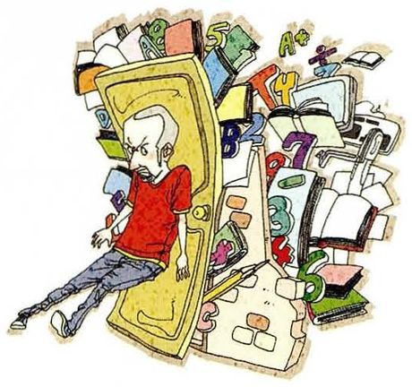
I guess I just didn't study hard enough.
The statementI guess I just didn't study hard enough.
What to ask about这句本身就是答案，而且理由是被问出来的。didn't study → 原问题多半在问「为什么没考好 / 为什么失败」。
Questions you can ask①Why did you fail the exam? ②Why didn't you study harder? ③What are you going to do about it?
15
Because he was the handsomest man I ever met!
The statementBecause he was the handsomest man I ever met!
What to ask about这是一个纯答案，连主句都没有。要推断出原问题：你为什么嫁给他 / 为什么选他。本课最难的一题。
Questions you can ask①Why did you marry him? ②Why did you choose him? ③What made you fall in love with him?
05重点词汇（美式音标）
课首页脚注给了 10 个词，是这一课最实用的部分 —— 全是讲理由和解释时的高频词。
A · 课本脚注的 10 个词
词
音标
课上怎么用
中文
refreshed
/rɪˈfreʃt/
Clean air makes me feel refreshed. 休息后精神焕发的
精神清爽的
skip
/skɪp/
skip breakfast / skip a class 不吃、不上、跳过
跳过
must
/mʌst/
Marriage isn't a must. 这里作名词：必需品。很少见但很好用
必需品
fortune
/ˈfɔːrtʃən/
make a fortune 发大财。固定搭配，用 make
大笔财富
stocks
/stɑːks/
invest in stocks 股票。常用复数
股票
due to
/duː tuː/
due to poor discipline 由于。比 because of 稍正式
由于
discipline
/ˈdɪsəplɪn/
poor discipline at home 管教、纪律
管教
workload
/ˈwɜːrkloʊd/
a heavy workload 工作量。可数
工作量
around the clock
/əˈraʊnd ðə klɑːk/
shop around the clock 全天候、二十四小时
全天候
neglect
/nɪˈɡlekt/
neglect your children 忽视（应尽的责任）
忽视
B · 讲理由的连接词
表达
音标
课上怎么用
中文
That's why…
/ðæts waɪ/
That's why I live here. 所以。接结果
所以（这就是为什么）
besides
/bɪˈsaɪdz/
Besides, I enjoy the variety. 而且。补充第二个理由
况且
anyway
/ˈeniweɪ/
There's no cure anyway. 反正。语气随意，常用句末
反正
so … that …
/soʊ … ðæt/
so stressed out that I started again 如此……以至于
太……以至于
instead of
/ɪnˈsted əv/
stay home instead of going out
而不是
in the first place
/ɪn ðə fɜːrst pleɪs/
Why did you stop in the first place? 一开始。追问「最初为什么」
一开始
C · 追问理由的进阶说法
表达
音标
用法
中文
What makes you say that?
/wʌt meɪks juː seɪ ðæt/
你为什么这么说。比 why 温和，也更专业
你为什么这么说
Is there a reason…?
/ɪz ðer ə ˈriːzn/
Is there a reason you chose it? 委婉追问
有什么原因吗
Why is that?
/waɪ ɪz ðæt/
为什么。最短的追问，口语极常用
那是为什么
What's the reason for…?
/wʌts ðə ˈriːzn fər/
……的原因是什么。正式
原因是什么
What for?
/wʌt fɔːr/
干什么用。比 why 更具体
做什么用
06老师大概率会问的问题
这一课的老师提问会集中在「你为什么这么想」，准备好每个观点后面的一句理由。
Why are you learning English?
For my research, mainly — most of my field's work is only published in English, and reading a translation means reading someone else's interpretation. But I'll be honest: the reason I keep paying for classes is different. It's that I don't want to be the quiet one at a conference. The first reason explains why I read; the second explains why I'm here on a Saturday.
把「工作理由」和「真实动机」分开说，是这一课最实用的结构。the second explains why I'm here on a Saturday 收得漂亮。
Why do you think some people stay in jobs they hate?
Because leaving is a decision and staying isn't. Every morning you can postpone leaving by one day without doing anything, and that's much easier than the alternative. I'd also say the money is usually a story, not the reason — most people I know who say they can't afford to leave haven't actually done the arithmetic.
leaving is a decision and staying isn't 这个对比非常有力，而且解释了为什么很多困境会持续 —— 不做决定本身是一种默认。haven't done the arithmetic 是很地道的批评方式。
Why is "why don't you" a suggestion rather than a question?
Because it already contains the answer. If I ask "why don't you go to the doctor", I'm not asking you to explain your reasoning — I'm telling you to go, politely. The question form softens it. In Chinese the same structure sounds much more like an accusation, which is why I avoided it for years, and I was being overly cautious.
Because "why" asks for a reason, and people often don't have one — they have a habit, or a feeling, and being asked for the reason puts them on the spot. That's why "what made you decide that" usually works better: it lets them tell a story instead of defending a position. Three "why"s in a row sounds like an interrogation, and it usually is one.
it lets them tell a story instead of defending a position —— 这是很好的语用观察，也给出了替代方案。and it usually is one 有点幽默。
Why do you think the man in question 10 believes his driving is safe?
Because he's confusing two different things: his own confidence and the actual risk. Driving fast feels skilled when nothing has gone wrong yet — he's had a hundred fast trips and no accidents, so his experience tells him he's fine. The problem is that the sample is small and the one bad case doesn't give him a second chance to learn from it.
the sample is small and the one bad case doesn't give him a second chance —— 用统计学的方式解释自信，比说「他太鲁莽了」有内容得多。
Give me three reasons why someone might live in the countryside.
Cheap housing, quiet, and air you can breathe. But I'd add the fourth one people don't say out loud: you can be left alone there. In a city, being alone costs money; in the country it's free, and for some people that's the whole point.
先给三个明显理由，再补一个「没人说出口的理由」，这是让回答超出预期的常见手法。being alone costs money in the city 这个观察很妙。
07这节课最容易犯的错
这一课的错误集中在两处：Why 问句的语序，以及把「为什么不」理解成质问。
✗Why you live in the country? ✓Why do you live in the country?
Why 后面要助动词。这是造问句最容易漏的一步，第 1、7、9、10、11、12 题都会撞上。
✗Why did you started smoking again? ✓Why did you start smoking again?
did 后面动词还原。
✗Why do you think is the crime rate increasing? ✓Why do you think the crime rate is increasing?
do you think 后面接陈述语序，不倒装。第 6、9、10 题都会用到这个结构。
✗Why don't you are going to the doctor? ✓Why don't you go and see the doctor?
why don't you 后面接动词原形，不能接 are going。
✗Why the crime rate is due to poor discipline? ✓Why is the crime rate increasing? / What's the cause of the crime rate?
原句的 due to 已经在给理由了，问句不能再把 due to 原样搬进去 —— 问的是那个结果。
✗Why you didn't study hard enough? ✓Why didn't you study hard enough?
否定问句里 didn't 直接跟主语，不需要再加 do。第 14 题最容易错。
✗Because of he was the handsomest man. ✓Because he was the handsomest man I ever met.
because 后面接完整句子；because of 后面只接名词。第 15 题原句用的就是 because。
✗Why don't you want to see the doctor? 用来劝人看病 这句在英语里听起来像质问「你为什么不想去」，而不是建议。要建议就直接说 Why don't you go and see the doctor? —— 用 go，不用 want to，语气才是提议。
08五十分钟怎么用
这一课的核心技能是「从理由反推问题」。先练这个，语法自然跟上。
课前 10 分钟：只看第 02 节 B 表的四个信号词That's why / so / due to / because —— 一看到就知道问什么。这是本课最省力的规律。
先做第 14、15 题这两题的陈述本身就是答案，最需要推理。能造出问句，说明你理解了整句的逻辑。
上课时：一个观点问三种 whyWhy do you think that? / What makes you say that? / Is there a reason? 同一件事问三遍，每遍语气不同 —— 这是 Part III 最有价值的练习。
课后：用第 06 节第 3 题自测能解释「why don't you 为什么是建议不是提问」，说明你理解了英语的语气，而不只是语法。